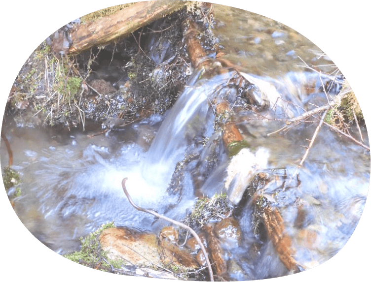
春の山の渓流
雪解けで水量を増した、芽吹きの季節の渓流。小鳥の声も、ほんのり混じります。
朝春
川のせせらぎ、雨だれ、波の寄せ返し。 リラックスを誘う、自然音の代表格。

雪解けで水量を増した、芽吹きの季節の渓流。小鳥の声も、ほんのり混じります。
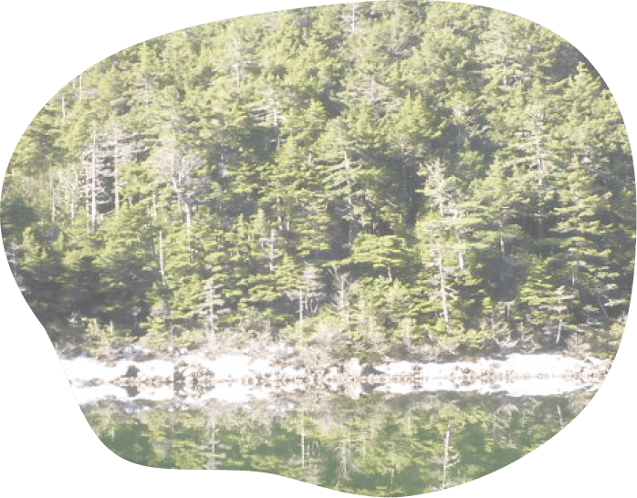
鳥がにぎやかに1日を始めてくれる、すがすがしい朝の川です。
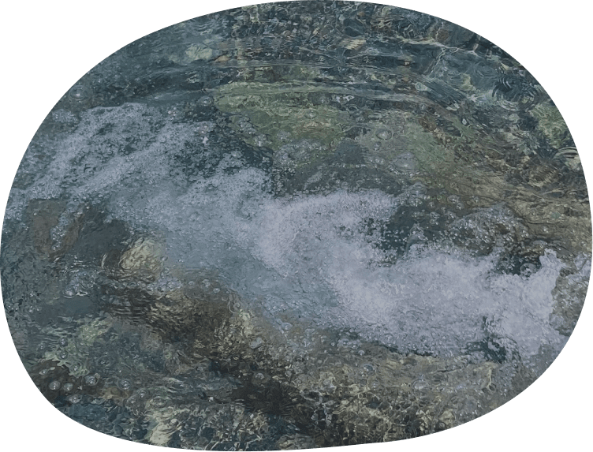
雨粒が水面を叩き、流れが少し速くなる。いつもの川が、雨でまた違う顔を見せます。
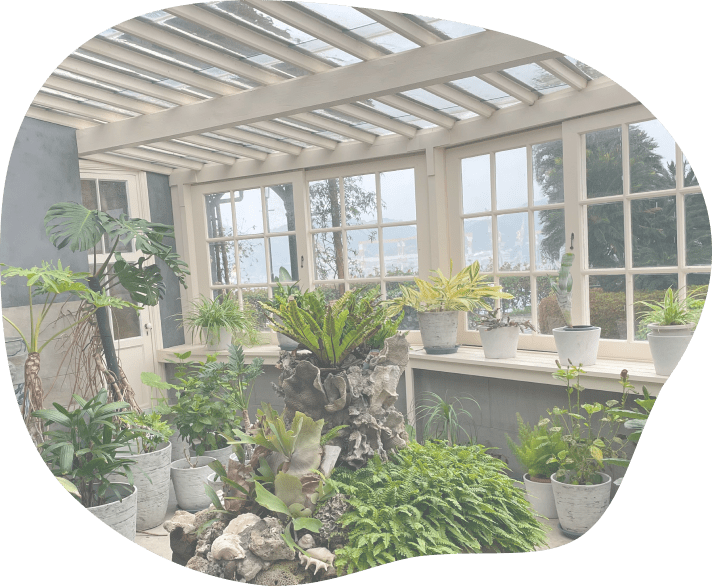
窓の外から聴こえてくる雨音。室内にいながら、自然がすぐそこにある安心感。
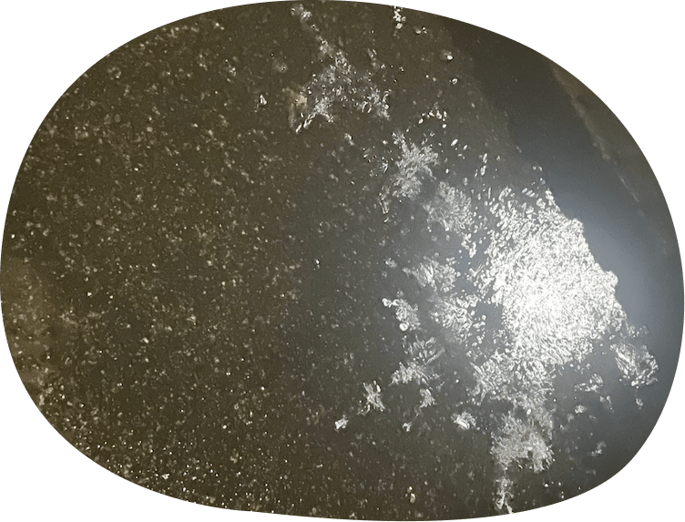
激しく地面を打つ雨の音。雨音以外は何にも聴こえない静けさに、不思議な心地よさがあります。
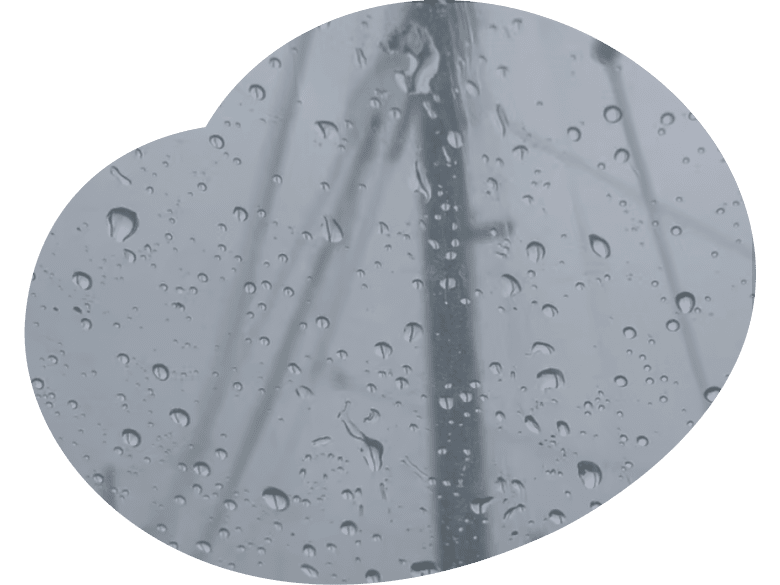
傘を叩く雨粒のリズムが、耳のすぐそばで響く。雨の日だけの、個人的な音の空間。
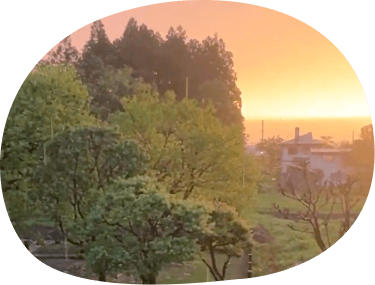
遠くで雷が鳴り、気温がすっと下がる瞬間。夏の夕方にだけ訪れる、激しくて清々しい音。
朝のさえずり、夕の虫の声。 季節の移ろいを教えてくれる、ちいさな声。
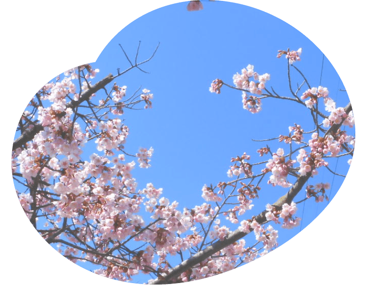
まだ肌寒い朝に、どこからか聴こえるうぐいすの声。春が来たと体で気づく瞬間です。
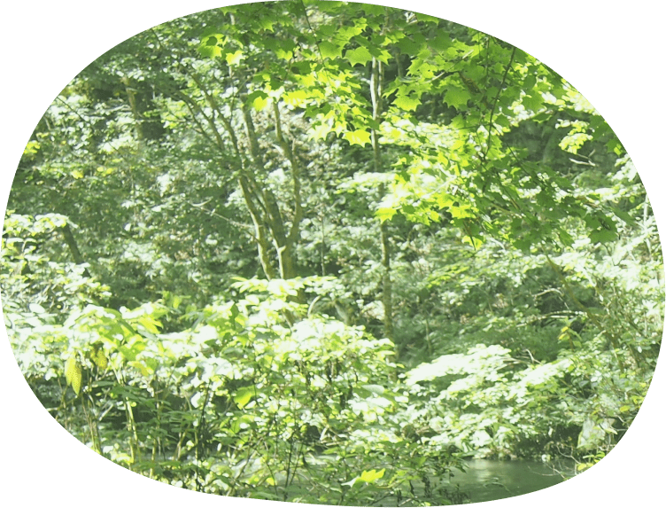
いくつもの鳥の声が重なり合い、森全体が響いているような感覚。
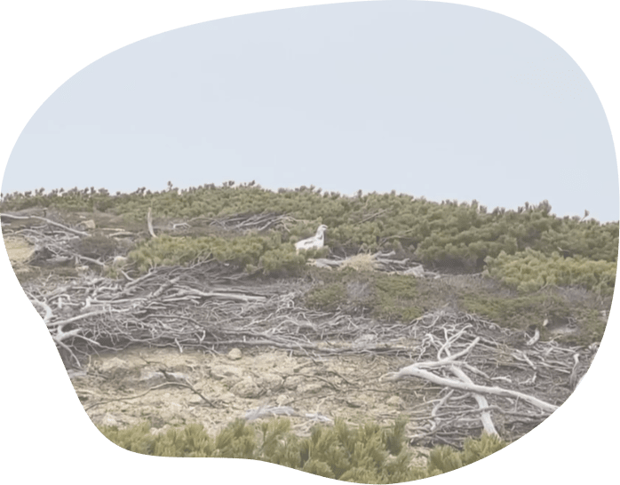
めったに聴けない雷鳥の声は、山の奥深さを思い知らせてくれます。風の中に響く一声。
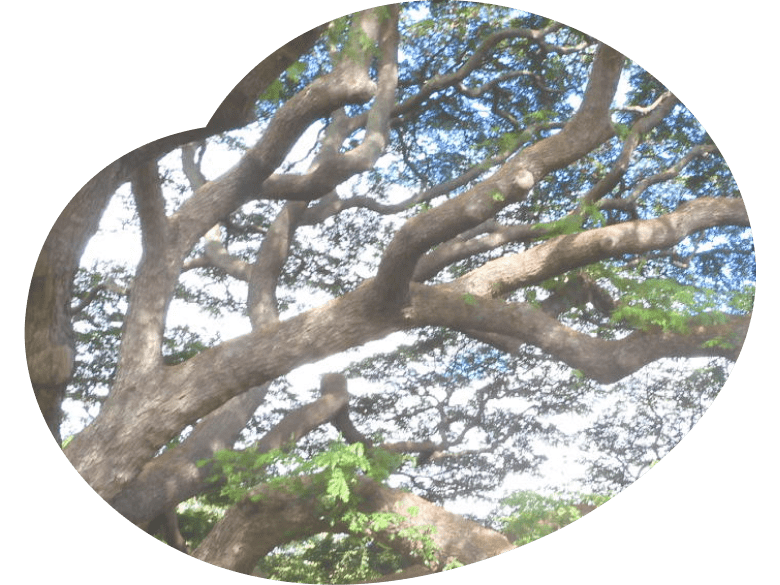
夏の盛りを告げる、ミンミンと鳴き続ける蝉の声。暑さも音のうちだと気づかせてくれます。
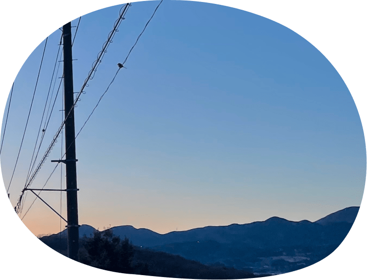
日が傾くころ、カナカナと鳴くひぐらし。夏の終わりを予感させる、少し切ない夕暮れの音。
葉ずれ、木々のきしみ、風のうなり。 繊細な響きに耳を澄ませて。
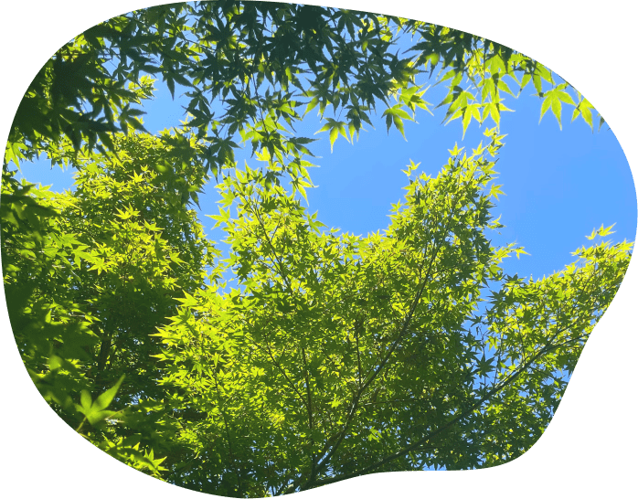
風が通るたびに、葉がざわめく。何気なく聴き流していた音に、耳をすませたくなります。
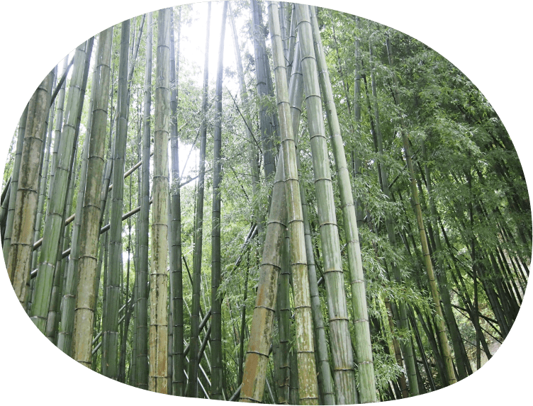
まっすぐ伸びる竹と、その間を吹き抜ける風がつくる穏やかな空間。
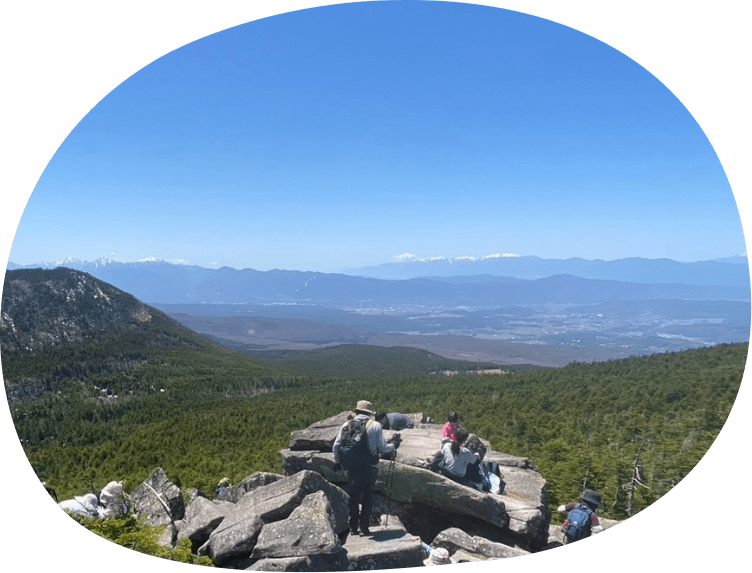
遮るものが何もない山頂で、風だけが轟く。静けさと力強さが交差する場所。
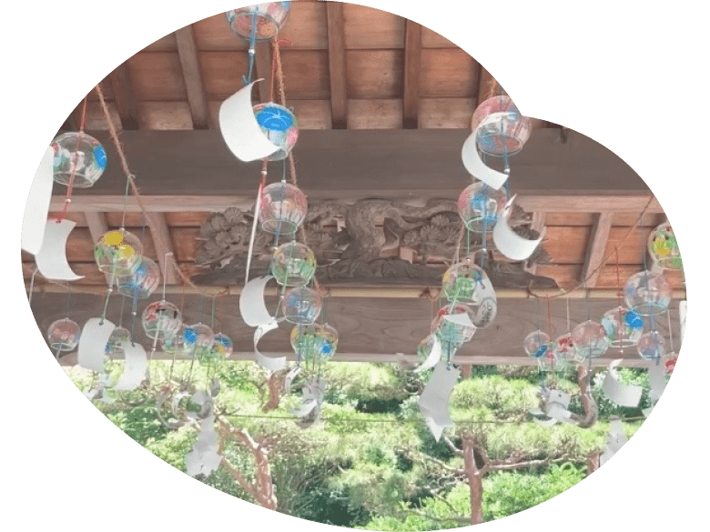
風鈴は、風が来たことを教えてくれる音。夏の風のやさしさを、耳で受け取る瞬間。
強い風の音に混じって、遠くから波の音がほんのり聴こえてくる。海にいる実感が、じわっと広がります。
聴いてみたい音は見つかりましたか。次は使い方を広げてみましょう。